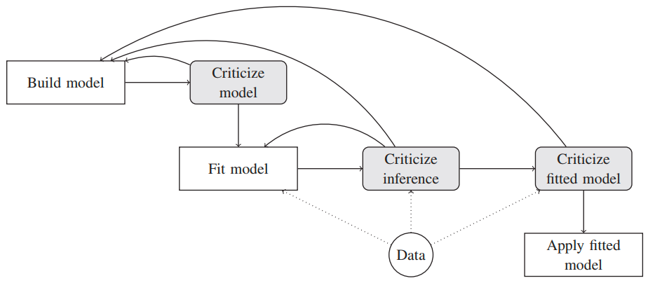
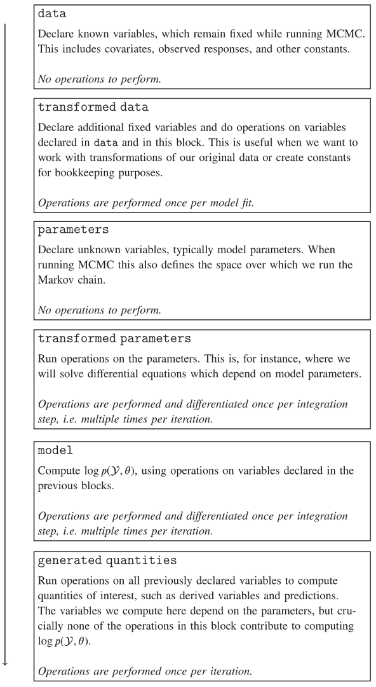

Chương 50 Xây dựng mô hình bệnh truyền nhiễm theo trường phái Bayes
(dựa trên (Grinsztajn et al. 2021))
50.1 Mô hình toán học bệnh truyền nhiễm
Mô hình toán học bệnh truyền nhiễm giúp
- Đánh giá hiệu quả của các biện pháp can thiệp trên sự lây nhiễm
- Đánh giá gánh nặng/ảnh hưởng của dịch bệnh
- Ước tính tỉ lệ tử vong sau khi hiệu chỉnh cho sai lệch báo cáo
Mô hình có thể ở nhiều quy mô khác nhau:
- Quy mô cá thể: agent-based models
- Quy mô dân số: compartmental models
Mô hình tại quy mô dân số bao gồm
- Deterministic models: ODEs
- Stochastic models: simulation
50.1.1 Các bước xây dựng mô hình

Hình 50.1: Các bước xây dựng mô hình
50.2 Stan

Hình 50.2: Cấu trúc code trong Stan
50.3 Ví dụ 1: dịch cúm tại một trường nội trú ở Anh năm 1978
50.3.1 Bước 1: xây dựng mô hình
Mathematical transmission model:
- Mô hình SIR:
- Tại thời điểm \(t\), số người cảm nhiễm (chưa có miễn dịch) là \(S(t)\), số người đang nhiễm bệnh và có khả năng lây bệnh là \(I(t)\), số người hồi phục là \(R(t)\) (có miễn dịch suốt đời).
- Xác suất để 1 người cảm nhiễm bị nhiễm bệnh là
- \(\beta\): tỉ suất lây truyền, transmission rate or effective contact rate (\(\text{Số tiếp xúc trong 1 đơn vị thời gian} \times \text{Xác suất bị nhiễm bệnh khi tiếp xúc với người bị nhiễm bệnh}\))
- Tỉ suất tiếp xúc (contact rate): số tiếp xúc trong 1 đơn vị thời gian
- Nguy cơ lây nhiễm (transmission risk)
- Giả định:
- constant population
- indefinitely immune
- no incubation period
- Thời gian tại \(I\) \(\sim exp(1/\gamma)\)
- constant transmission rate & recovery rate
- homogeneous mixing
- Mô hình truyền nhiễm xác suất:
- Likelihood: Số lượng BN quan sát được tại thời điểm \(t\) \(\sim \text{Negative Binomial}(I(t), \phi)\)
- Phân phối tiền nghiệm của các tham số:
- Tỉ suất lây nhiễm \(\beta\): \(\text{Normal}^+(2, 1)\) (weakly informative prior, \(\beta\) dương [truncated at 0] & soft higher limit around 4 [\(P(\beta < 4) = 0.975\)])
- Tỉ suất hồi phục \(\gamma\): \(\text{Normal}^+(0.4, 0.5)\) (\(\gamma\) dương [truncated at 0] & \(P(\gamma \leq 1) = 0.9\))
- Tham số dispersion: \(P(1/\phi) = \text{exponential}(5)\)
50.3.2 Bước 2:
# library(rstan)
# library(gridExtra)
# rstan_options(auto_write = TRUE)
# options(mc.cores = parallel::detectCores())// functions block: specify ODEs
functions {
real[] sir(real t, real[] y, real[] theta,
real[] x_r, int[] x_i) {
real S = y[1];
real I = y[2];
real R = y[3];
real N = x_i[1];
real beta = theta[1];
real gamma = theta[2];
real dS_dt = -beta * I * S / N;
real dI_dt = beta * I * S / N - gamma * I;
real dR_dt = gamma * I;
return {dS_dt, dI_dt, dR_dt};
}
}
data {
int<lower=1> n_days;
real y0[3];
real t0;
real ts[n_days];
int N;
int cases[n_days];
}
transformed data {
real x_r[0];
int x_i[1] = { N };
}
parameters {
real<lower=0> gamma;
real<lower=0> beta;
real<lower=0> phi_inv;
}
transformed parameters{
real y[n_days, 3];
real phi = 1. / phi_inv;
{
real theta[2];
theta[1] = beta;
theta[2] = gamma;
y = integrate_ode_rk45(sir, y0, t0, ts, theta, x_r, x_i);
}
}
model {
//priors
beta ~ normal(2, 1); //truncated at 0
gamma ~ normal(0.4, 0.5); //truncated at 0
phi_inv ~ exponential(5);
//sampling distribution
//col(matrix x, int n) - The n-th column of matrix x. Here the number of infected people
cases ~ neg_binomial_2(col(to_matrix(y), 2), phi);
}
generated quantities {
real R0 = beta / gamma;
real recovery_time = 1 / gamma;
real pred_cases[n_days];
pred_cases = neg_binomial_2_rng(col(to_matrix(y), 2) + 1e-5, phi);
}# # time series of cases
# library(outbreaks)
# library(tidyverse)
# cases <- influenza_england_1978_school$in_bed # Number of students in bed
#
# # total count
# N <- 763;
#
# # times
# n_days <- length(cases)
# t <- seq(0, n_days, by = 1)
# t0 <- 0
# t <- t[-1]
#
# #initial conditions
# i0 <- 1
# s0 <- N - i0
# r0 <- 0
# y0 = c(S = s0, I = i0, R = r0)
#
# # data for Stan
# data_sir <- list(n_days = n_days, y0 = y0, t0 = t0, ts = t, N = N, cases = cases, compute_likelihood = 0)
#
# # number of MCMC steps
# niter <- 2000# set.seed(10)
# model <- stan_model(file.path("code", "BayesDisTransModels", "sir_negbin.stan"))
# fit_sir_negbin <- sampling(model,
# data = data_sir,
# iter = niter,
# chains = 4,
# seed = 0)50.4 prior predictive check
Tài liệu tham khảo
Grinsztajn, Léo, Elizaveta Semenova, Charles C. Margossian, and Julien Riou. 2021. “Bayesian Workflow for Disease Transmission Modeling in Stan.” Statistics in Medicine n/a (n/a). https://doi.org/10.1002/sim.9164.